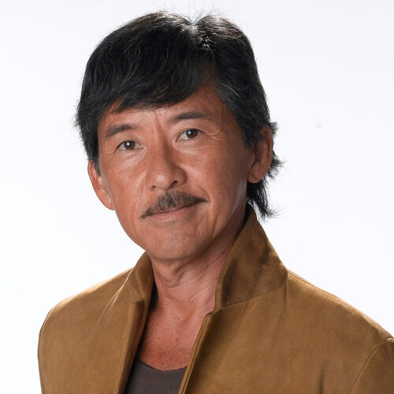

✨ 頂級星光名單降臨預告 ｜ CHANCE OF ENCOUNTER
根據資深饕客與內部密探透露，在此享受頂級料理的同時，隨時有機會與華語樂壇傳奇、時尚指標大來賓同場共醺！
周杰倫 ╳ 侯佩岑 ╳ 劉德華
傳奇殿堂流「極致的創作野心，與對細節無可挑剔的極簡平衡。」

華語巨星 周杰倫

指名料理 法式解構滷肉塔
時尚優雅 侯佩岑

清甜御膳 低溫烤有機時蔬襯金箔

不老傳奇 劉德華
對極度要求美學創意的天王周杰倫而言，飲食是一場聽覺以外的感官解構。主廚將台灣傳統古法醬香與法式高級工藝融合，驚艷了天王的挑剔味蕾。而品味指標侯佩岑與不老傳奇劉德華，則著迷於料理中那份「乾淨的奢華」，每一口都能品嚐到食材最純粹、無負擔的優雅平衡學。
小 S ╳ 葉倩文 ╳ 林子祥
真性情天后流「頂級包廂的安全隱私，釋放微醺深夜裡最真實的靈魂。」

綜藝女王 小 S 徐熙娣

經典翻玩 炙燒海膽豬血糕

傳奇歌后 葉倩文

御用滋補 慢燉膠原花膠清湯

鐵肺歌王 林子祥
綜藝天后小S對環境的絕對安全感與侍酒師的功力出了名的挑剔。樂福利的尊榮隔音服務，讓她能全然卸下防備暢快大笑。而攜手蒞臨的傳奇樂壇夫妻檔 James 林子祥與 Sally 葉倩文，則專注於主廚對老母雞清湯與花膠慢燉的溫度紀律，將其視為護嗓與滋養身心的頂級御膳。
徐懷鈺 ╳ 梁詠琪 ╳ 鄧紫棋
當代美學流「在國際級技法底蘊裡，尋得最觸動心靈的溫暖記憶。」
平民天后 徐懷鈺

靈魂台味 脆皮慢烤手撕豬

文藝女神 梁詠琪

精緻法味 熟成櫻桃鴨胸襯老酒泥
鐵肺歌后 鄧紫棋
平民天后徐懷鈺著迷於那些將她小時候記憶中的街頭香氣，透過高級手法重新包裹的翻玩料理，總能一瞬間撫平疲憊。文藝女神梁詠琪與鐵肺歌后鄧紫棋訪台時，則醉心於14天乾式熟成櫻桃鴨胸的極致層次，精準的熟成火候，展現了無可挑剔的舌尖藝術。
謝霆鋒 ╳ 八三夭 ╳ 陳零九
潮流新定義「打破傳統美食框架，搖滾硬派與主理人視角的終極碰撞。」

鋒味主理 謝霆鋒

匠心工藝 極致熟成M9和牛割烹
搖滾天團 八三夭 (831)

熱血翻玩 剝皮辣椒手作奢華薄餅
潮流才子 陳零九
本身就是星級大廚的「鋒味」主理人謝霆鋒，對樂福利廚房內盤溫與乳化細節的高標準給予了極高讚譽。而搖滾天團八三夭與潮流才子陳零九，則為這場私密飯局注入了熱血與現代摩登的碰撞火花，大膽翻玩傳統台味。
📊 深度分析 ｜ 頂級巨星們的私房點單密碼
| 指名貴賓 | 主廚特製私房指定料理 | 極致工藝與菜系特點 | 巨星饕客青睞的核心原因 |
|---|---|---|---|
| 周杰倫 | 松露風味法式解構滷肉塔 | 台式金仙滷肉與頂級黑松露的法式酥皮重組 | 驚艷的視覺張力與中西文化碰撞的音樂性 |
| 侯佩岑 | 低溫慢烤有機季節時蔬襯金箔 | 契作小農當晨現採時蔬，以精準法式舒肥鎖水 | 極簡奢華，保留風土原汁原味的乾淨平衡學 |
| 小 S | 炙燒海膽豬血糕 ╳ 頂級自然酒 | 將傳統豬血糕微距炭火炙燒，襯上現拆海膽 | 極度大膽的真性情翻玩，極致完美的侍酒搭配 |
| 葉倩文 / 林子祥 | 慢燉膠原花膠雞精清湯 | 精選老母雞慢火滴燉12小時，融入頂級厚花膠 | 精準溫控滋補咽喉，對食材純度近乎偏執的嚴苛 |
| 梁詠琪 | 熟成櫻桃鴨胸襯法式老酒泥 | 14天乾式熟成，外皮如鏡，佐台灣陳年老酒醬 | 絲滑內斂的法式節奏，帶著人文詩意的慢食底蘊 |
| 徐懷鈺 | 脆皮慢烤手撕豬襯九層塔雪酪 | 將傳統控肉轉化為金黃手撕豬，搭配清新羅勒雪酪 | 溫暖且充滿創意的回憶延伸，瞬間撫平疲憊 |